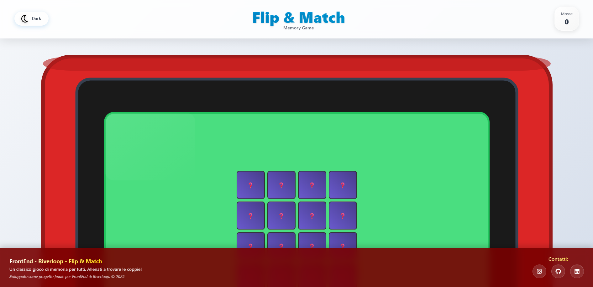
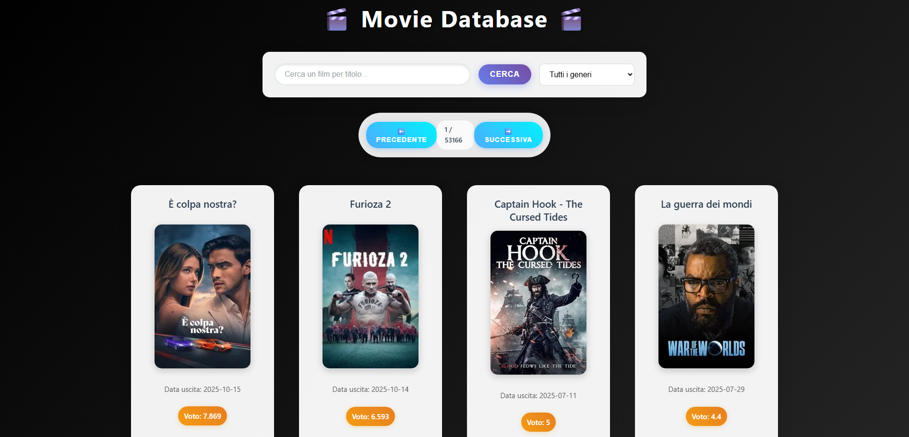

Ciao ! Sono Vincenzo, ho 21 anni e questo è il mio portfolio...
Non sto qui a raccontarti la storia di tutta la mia vita, ma ti
descrivo un po' quali sono le mie passioni e ambizioni.
Sono un appassionato di fotografia, la fotografia per me è più di
uno scatto: ma un modo per fermare attimi che altrimenti
scivolerebbero via. Attraverso l'obiettivo riesco a dare spazio alla
mia curiosità e al desiderio di scoprire cose nuove.
Sin da bambino, sognavo di diventare uno sviluppatore, affascinato
dall'idea di creare qualcosa dal nulla che potesse essere utile e,
perché no, rendermi famoso.
Quel sogno è cresciuto con me. Oggi, sto studiando come Front-End
Developer. Ho già creato qualche progetto, ed in ogni progetto ho
cercato di dare uno stile unico che possa lasciare un segno in chi
lo guarda.
Sei pronto a scoprirli? Qui sotto ho lasciato dei link se vuoi dacci
un'occhiata, e grazie per il tuo tempo!
Benvenuto nel mio portfolio personale!
Chi sono
Le mie Foto


Progetti & Skills
Skills
Progetti Principali
Flip&Match
Flip and Match è un gioco memory sviluppato in JavaScript Vanilla che mette alla prova la memoria e la velocità del giocatore. L'obiettivo è abbinare coppie di carte identiche nel minor tempo possibile, sfidandosi a completare il gioco con il minor numero di tentativi. Realizzato per consolidare le competenze nella logica di programmazione, nella manipolazione del DOM e nello styling dinamico, il progetto integra un contatore di mosse e animazioni fluide, tutto racchiuso in un design completamente responsive. Tecnologie: HTML5, CSS3, JavaScript.
MovieDatabase

Project Movie DataBase è un'applicazione web interattiva per
l'esplorazione e la ricerca di film, che utilizza le API di OMDb
per fornire dati aggiornati in tempo reale. Sviluppata con
HTML5, CSS3 e JavaScript Vanilla, dimostra competenze
nell'integrazione di API esterne, gestione dinamica dei
contenuti e creazione di interfacce utente intuitive. Le
funzionalità principali includono la ricerca di film per titolo,
la visualizzazione dettagliata di informazioni come anno di
uscita, e valutazioni, il tutto racchiuso in un layout
completamente responsive che si adatta a qualsiasi dispositivo.
Altri Hobby
Viaggiare
Una delle mie più grandi passioni per l'appunto è viaggiare. Viaggiare per me indica libertà, senso dell'avventura, scoprire nuovi luoghi e vivere per i pochi giorni di viaggio, realtà completamente diverse alle quali sei abituato. Uno dei miei ultimi viaggi è stato a Skiathos, una piccola isola greca, lì ho scoperto un sacco di cose che non sapevo mi piacessero, come ad esempio la cipolla, anche se non so se effettivamente è iniziata a piacermi o mi sono dovuto adattare, (visto che loro la utilizzano ovunque).
E forse è proprio questo il bello del viaggiare: scoprire non solo nuovi luoghi, ma parti di noi stessi che non sapevamo esistessero.
Stare a contatto con le persone
È, a mio avviso, un bisogno naturale di ogni essere umano. Per quanto mi riguarda, credo di avere una predisposizione innata: quando mi trovo in mezzo agli altri riesco sempre a dare il meglio di me. Mi piace scherzare, confrontarmi, discutere e condividere momenti che arricchiscono la giornata. Nel 2024 ho avuto la possibilità di svolgere il Servizio Civile e questa esperienza mi ha insegnato che ogni incontro porta con sé una storia, un'emozione e un insegnamento. Condividere il tempo con gli altri, ascoltare e aiutare, anche con piccoli gesti. Ogni sorriso ricevuto e ogni parola detta hanno lasciato un segno dentro di me, trasformando un semplice impegno quotidiano in un percorso di crescita personale.
Perché alla fine, il contatto con le persone non è solo una parte della vita: è ciò che la rende davvero viva.
Ascoltare la musica
Per me è molto più che intrattenimento: è una sorta di yoga personale. È quel momento in cui riesco a fermarmi, a concentrarmi e a rilassarmi davvero. Le note mi aiutano a liberare la mente, a scacciare via paure, timori e pensieri negativi che a volte appesantiscono la giornata. Ogni brano diventa un rifugio, un luogo sicuro dove posso ritrovare me stesso e ricaricare le energie.
La musica non si limita a riempire il silenzio: è ciò che dà voce alle emozioni che non sappiamo esprimere.